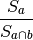

SphericalPolygon¶
-
class
spherical_geometry.polygon.SphericalPolygon(init, inside=None)[source]¶ Bases:
objectPolygons are represented by both a set of points (in Cartesian (x, y, z) normalized on the unit sphere), and an inside point. The inside point is necessary, because both the inside and outside of the polygon are finite areas on the great sphere, and therefore we need a way of specifying which is which.
This class contains a list of disjoint closed polygons.
Parameters: init : object
- May be either:
A list of disjoint
SphericalPolygonobjects.An Nx3 array of (x, y, z) triples in Cartesian space. These points define the boundary of the polygon. It must be “closed”, i.e., the last point is the same as the first.
It may contain zero points, in which it defines the null polygon. It may not contain one, two or three points. Four points are needed to define a triangle, since the polygon must be closed.
inside : An (x, y, z) triple, optional
If init is an array of points, this point must be inside the polygon. If not provided, the mean of the points will be used.
Attributes Summary
insideIterate over the inside point of each of the polygons. pointsThe points defining the polygons. Methods Summary
area()Returns the area of the polygon on the unit sphere in steradians. contains_arc(a, b)Returns Trueif the polygon fully encloses the arc given by a and b.contains_point(point)Determines if this SphericalPolygoncontains a given point.copy()draw(m, **plot_args)Draws the polygon in a matplotlib.Basemap axes. from_cone(ra, dec, radius[, degrees, steps])Create a new SphericalPolygonfrom a cone (otherwise known as a “small circle”) defined using (ra, dec, radius).from_radec(ra, dec[, center, degrees])Create a new SphericalPolygonfrom a list of (ra, dec) points.from_wcs(fitspath[, steps, crval])Create a new SphericalPolygonfrom the footprint of a FITS WCS specification.intersection(other)Return a new SphericalPolygonthat is the intersection of self and other.intersects_arc(a, b)Determines if this SphericalPolygonintersects or contains the given arc.intersects_poly(other)Determines if this SphericalPolygonintersects anotherSphericalPolygon.multi_intersection(polygons)Return a new SphericalPolygonthat is the intersection of all of the polygons in polygons.multi_union(polygons)Return a new SphericalPolygonthat is the union of all of the polygons in polygons.overlap(other)Returns the fraction of self that is overlapped by other. SphericalPolygon.same_points_asto_radec()Convert the SphericalPolygonfootprint to RA and DEC coordinates.union(other)Return a new SphericalPolygonthat is the union of self and other.Attributes Documentation
-
inside¶ Iterate over the inside point of each of the polygons.
-
points¶ The points defining the polygons. It is an iterator over disjoint closed polygons, where each element is an Nx3 array of (x, y, z) vectors. Each polygon is explicitly closed, i.e., the first and last points are the same.
Methods Documentation
-
area()[source]¶ Returns the area of the polygon on the unit sphere in steradians.
The area is computed using a generalization of Girard’s Theorem.
if
 is the sum of the internal angles of the
polygon, and n is the number of vertices, the area is:
is the sum of the internal angles of the
polygon, and n is the number of vertices, the area is:
-
contains_point(point)[source]¶ Determines if this
SphericalPolygoncontains a given point.Parameters: point : an (x, y, z) triple
The point to test.
Returns: contains : bool
Returns
Trueif the polygon contains the given point.
-
copy()¶
-
draw(m, **plot_args)[source]¶ Draws the polygon in a matplotlib.Basemap axes.
Parameters: m : Basemap axes object
**plot_args : Any plot arguments to pass to basemap
-
classmethod
from_cone(ra, dec, radius, degrees=True, steps=16.0)[source]¶ Create a new
SphericalPolygonfrom a cone (otherwise known as a “small circle”) defined using (ra, dec, radius).The cone is not represented as an ideal circle on the sphere, but as a series of great circle arcs. The resolution of this conversion can be controlled using the steps parameter.
Parameters: ra, dec : float scalars
This defines the center of the cone
radius : float scalar
The radius of the cone
degrees : bool, optional
If
True, (default) ra, dec and radius are in decimal degrees, otherwise in radians.steps : int, optional
The number of steps to use when converting the small circle to a polygon.
Returns: polygon :
SphericalPolygonobject
-
classmethod
from_radec(ra, dec, center=None, degrees=True)[source]¶ Create a new
SphericalPolygonfrom a list of (ra, dec) points.Parameters: ra, dec : 1-D arrays of the same length
The vertices of the polygon in right-ascension and declination. It must be “closed”, i.e., that is, the last point is the same as the first.
center : (ra, dec) pair, optional
A point inside of the polygon to define its inside. If no center point is provided, the mean of the polygon’s points in vector space will be used. That approach may not work for concave polygons.
degrees : bool, optional
If
True, (default) ra and dec are in decimal degrees, otherwise in radians.Returns: polygon :
SphericalPolygonobject
-
classmethod
from_wcs(fitspath, steps=1, crval=None)[source]¶ Create a new
SphericalPolygonfrom the footprint of a FITS WCS specification.This method requires having astropy installed.
Parameters: fitspath : path to a FITS file,
astropy.io.fits.Header, orastropy.wcs.WCSRefers to a FITS header containing a WCS specification.
steps : int, optional
The number of steps along each edge to convert into polygon edges.
Returns: polygon :
SphericalPolygonobject
-
intersection(other)[source]¶ Return a new
SphericalPolygonthat is the intersection of self and other.If the intersection is empty, a
SphericalPolygonwith zero subpolygons will be returned.Parameters: other : SphericalPolygonReturns: polygon : SphericalPolygonobjectNotes
For implementation details, see the
graphmodule.
-
intersects_arc(a, b)[source]¶ Determines if this
SphericalPolygonintersects or contains the given arc.
-
intersects_poly(other)[source]¶ Determines if this
SphericalPolygonintersects anotherSphericalPolygon.This method is much faster than actually computing the intersection region between two polygons.
Parameters: other :
SphericalPolygonReturns: intersects : bool
Returns
Trueif this polygon intersects the other polygon.
-
classmethod
multi_intersection(polygons)[source]¶ Return a new
SphericalPolygonthat is the intersection of all of the polygons in polygons.Parameters: polygons : sequence of SphericalPolygonReturns: polygon : SphericalPolygonobject
-
classmethod
multi_union(polygons)[source]¶ Return a new
SphericalPolygonthat is the union of all of the polygons in polygons.Parameters: polygons : sequence of SphericalPolygonReturns: polygon : SphericalPolygonobjectSee also
-
overlap(other)[source]¶ Returns the fraction of self that is overlapped by other.
Let self be a and other be b, then the overlap is defined as:

Parameters: other :
SphericalPolygonReturns: frac : float
The fraction of self that is overlapped by other.
-
to_radec()[source]¶ Convert the
SphericalPolygonfootprint to RA and DEC coordinates.Returns: polyons : iterator
Each element in the iterator is a tuple of the form (ra, dec), where each is an array of points.
-
union(other)[source]¶ Return a new
SphericalPolygonthat is the union of self and other.Parameters: other : SphericalPolygonReturns: polygon : SphericalPolygonobjectSee also
Notes
For implementation details, see the
graphmodule.